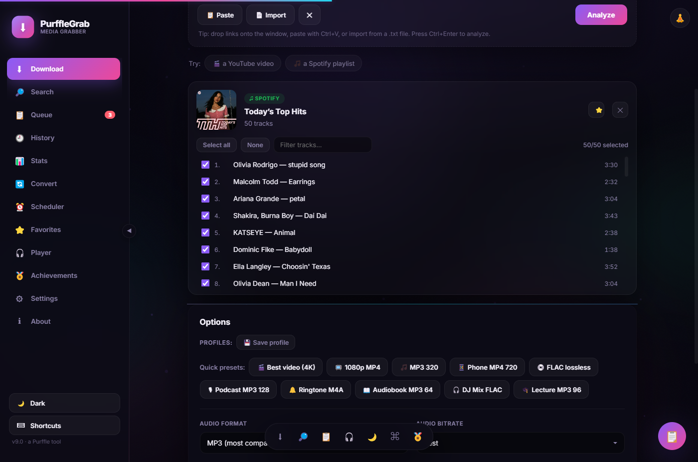

Home › Guides › Download a Spotify playlist to MP3
How to Download a Spotify Playlist to MP3 (Free, 2026)
This guide walks through downloading a complete Spotify playlist as MP3 or lossless FLAC —
with cover art, artist and album tags written into every file. It takes about two minutes,
costs nothing, and needs no Spotify account or API key.
First, how Spotify downloading actually works
Worth understanding before you start, because it explains the one limitation you may hit.
Spotify's audio streams are DRM-protected — no tool can pull the original file off Spotify,
and any tool claiming otherwise is not doing what it says.
What PurffleGrab does instead is read the playlist's public track list
(title, artist, album, cover art — no login required), then find the closest matching audio
on YouTube for each track, download it at your chosen quality, and write the Spotify metadata
onto the resulting file. This is the same approach used by every working tool in this space,
including spotDL. The upshot: your files get clean, correct tags and artwork, but the audio
itself comes from a YouTube match — so on rare occasions a track can match the wrong version
(a live cut, a remix, or a cover). The
troubleshooting section covers how to fix that.
Step by step
1. Install PurffleGrab
Grab the latest release —
.exe for Windows, .dmg for macOS (Intel and Apple Silicon), or
.AppImage/.deb for Linux. FFmpeg and the yt-dlp engine are bundled,
so there is nothing else to install. On Windows, SmartScreen may warn on first launch because
the build is unsigned — choose More info → Run anyway.
2. Copy the playlist link
In Spotify, open the playlist and choose Share → Copy link to playlist. A URL like
open.spotify.com/playlist/… is what you want. Album and single-track links work
exactly the same way. The playlist must be public or unlisted — a fully private playlist
isn't readable without your account.
3. Paste and analyze
Paste the link into PurffleGrab and click Analyze. Every track in the
playlist is listed with its duration. You can untick anything you don't want, or use the
filter box to narrow a long playlist down before selecting.
4. Pick your format
Choose Audio only, then a format. MP3 320 is the safe default and
plays anywhere; FLAC lossless is the choice if you're archiving. There are one-click
presets for both. See the format comparison below if you're unsure.
5. Download
Click Download. Progress, speed and ETA show per track, and you can run
up to six downloads at once (Settings → Simultaneous downloads). Files land in
Music/PurffleGrab/ by default.

The track picker after analyzing a Spotify playlist, with quality presets below.
Which format should you choose?
Format
Size per track
Quality
Best for
MP3 320
~8 MB
Very good
The default. Plays on literally everything — car stereos, old MP3 players, phones.
M4A / AAC 256
~6 MB
Very good
Slightly better than MP3 at the same size. Ideal in the Apple ecosystem.
FLAC
~25–35 MB
Lossless
Archiving. Note the source is a compressed YouTube stream, so FLAC preserves it exactly rather than improving it.
Opus
~4 MB
Excellent
Best quality per byte, but support on older devices is patchy.
MP3 128
~3 MB
Fair
Podcasts and spoken word, where file size matters more than fidelity.
One honest caveat on FLAC: because the audio originates from a compressed stream, encoding it
to FLAC gives you a lossless copy of that stream — it cannot restore detail that was
never there. Choose FLAC for archival stability, not as a quality upgrade.
Cover art, artist and album tags
Tags are written from Spotify's own metadata rather than scraped from the YouTube title, which
is why the results land cleanly in music libraries. With Embed cover / thumbnail and
Embed title & artist enabled (both on by default), each file gets the track title,
artist, album name and full-resolution album artwork embedded. Files import into iTunes, Apple
Music, Plex, Jellyfin, foobar2000 and Navidrome with artwork and grouping already correct.
If you want a different naming scheme on disk, the Rename files tool in the
History tab applies a pattern such as %(artist)s - %(title)s across a finished
download, and always shows a preview before changing anything.
Troubleshooting
A track downloaded the wrong version (live, remix or a cover)
The YouTube match wasn't right. Fix it by downloading that one track
on its own: search for it in the Search tab, pick the correct result by eye, and download it.
Then delete the bad file. This is the trade-off of the matching approach described at the top
of this page.
"No match found on YouTube" for some tracks
Usually a very obscure release, a regional exclusive, or a track whose
artist name is spelled differently on YouTube. Search the Search tab manually — it will
normally be there under a slightly different title.
Downloads fail or stall part-way through
YouTube changes its internals often. Go to Settings → Update
engine to pull the newest yt-dlp; this resolves the large majority of sudden failures.
If a big playlist is being throttled, lower Simultaneous downloads to 1 or 2, or set
a speed limit in the advanced options.
The playlist won't analyze at all
Check the playlist is public or unlisted rather than private, and that
you copied the playlist link rather than a link to a single track inside it. Collaborative
and algorithmic mixes generated just for you may not be publicly readable.
Where did my files go?
Music/PurffleGrab/ by default, in a per-job folder.
Change the location in Settings, or click Open folder on any finished download.
Is this legal?
PurffleGrab is a tool, and how you use it is your responsibility. Downloading copyrighted music
you have not paid for generally breaches Spotify's and YouTube's terms of service, and may
infringe copyright where you live. Legitimate uses include your own uploads, public-domain and
Creative Commons material, and content you are licensed to keep offline. We don't endorse
piracy and accept no liability for misuse.